Home
Timeline
Artists
Stories
Galleries
Exhibitions
About
The Spence Collection
How art can change your life.
Chris Wilder
Website:
http://home.snafu.de/kapinos/wilder.htm
Discovery
http://home.snafu.de/kapinos/wilder.htm
Artworks in the Spence Collection
Circle of Deceit
Created 1994 Created 1994
Coasters from 'Lost Dogs & Beer' show
Created 1992-3? Created 1992-3?
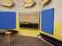
Curse of the Chumash
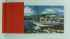
Dead Old Men and Dead Fish in the Land of the Rising Sun
Created 1991 Created 1991
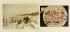
Fabricated UFO Sighting at Monte Carlo with the Jewels from Hong Kong (In Your Dreams)
Created 1991 Created 1991
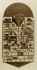
Flying High in the Sky with Peyote in your Eye (Crest)
Created 1991 Created 1991
Groom Lake
Created 1995 Created 1995
Gulf Breeze Sightings [UFO]
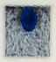
Himalayan Expedition
Created 1989 Created 1989
Installation of Dots
Created 1988 Created 1988
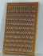
Key Rack
Created 1988 Created 1988
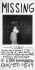
Missing
Created 1992 Created 1992
Missing
Created 1992 Created 1992
Old Dead Men and Dead Fish
Created 1990 Created 1990
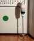
Segmented Worm Head
Created 1990 Created 1990
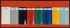
Speed Racer
Created 1988 Created 1988
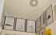
UFO photos
Created 1997 Created 1997
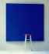
UFO Sighting
Created 1988 Created 1988
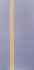
Underdog
Created 1997 Created 1997
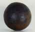
"What I would make were I a dung beetle but, I'm not"
Created 1991 Created 1991
Home
Timeline
Artists
Stories
Galleries
Exhibitions
About